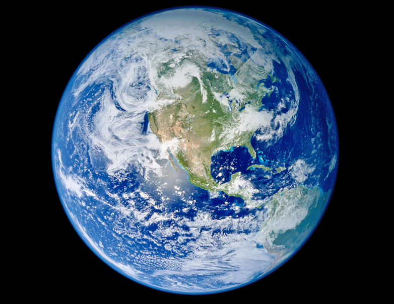

|
| Mercury |
| Mass (kg): |
3.3 x 10^23 |
| Diameter (km): |
4879.4
|
| Mean Density (kg/m^3): |
5420 |
| Escape Velocity (m/s): |
4300 |
| Average Distance from Sun: |
0.387 AU |
| Rotation Period (length of day in Earth days): |
58.65 |
| Revolution Period (length of year in Earth days): |
87.97 |
 |
| Venus |
| Mass (kg): |
4.87 x 10^24 |
| Diameter (km): |
12104 |
| Mean Density (kg/m^3): |
5250 |
| Escape Velocity (m/s): |
10400 |
| Average Distance from Sun: |
0.723 AU |
| Rotation Period (length of day in Earth days): |
243.02 (retrograde) |
| Revolution Period (length of year in Earth days): |
224.7 |
 |
| Earth |
| Mass (kg): |
| Diameter (km): |
12756 |
| Mean Density (kg/m^3): |
5520 |
| Escape Velocity (m/s): |
11200 |
| Average Distance from Sun: |
1 AU |
| Rotation Period (length of day in Earth days): |
1 (23.93 hours) |
| Revolution Period (length of year in Earth days): |
365.26 |
 |
| Mars |
| Mass (kg): |
6.42 x 10^23 |
| Diameter (km): |
6787 |
| Mean Density (kg/m^3): |
3940 |
| Escape Velocity (m/s): |
5000 |
| Average Distance from Sun: |
1.524 AU |
| Rotation Period (length of day in Earth days): |
1.026 |
| Revolution Period (length of year in Earth days): |
686.98 |